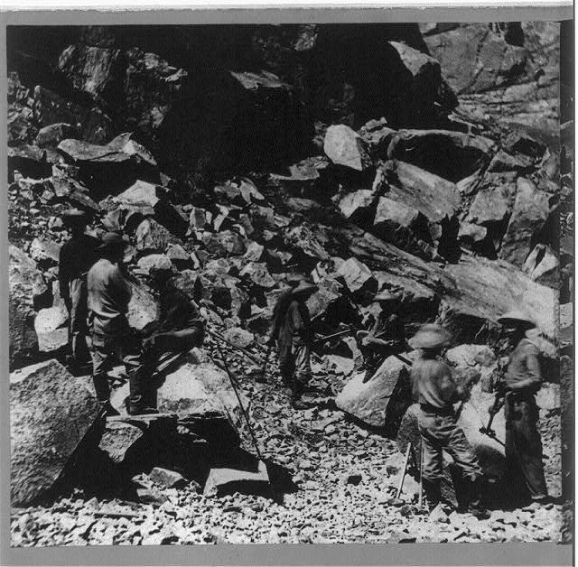

We study where equity, economics and ethnicity meet, and turn it into evidence local communities and policymakers can use.
Fairness and justice in economic systems and social policy.
Wealth, labour markets and community investment.
The experiences and cultural wealth of diverse communities.
The uncredited contributions and lost legacy of the workers who built it.
Oct 4, 2026

Minghao Gu on the dangerous labour, resistance and overlooked legacy of Chinese immigrants.
Full research paper on Chinatown as an ethnic economy built on solidarity, identity and community.
How Chinatowns foster economic solidarity and community resilience across generations.
Filter by who you are and what you need. Past deadlines drop off automatically.
Rigorous, community-centred research that closes the gap between lived experience and policy, for every ethnicity and economic background.